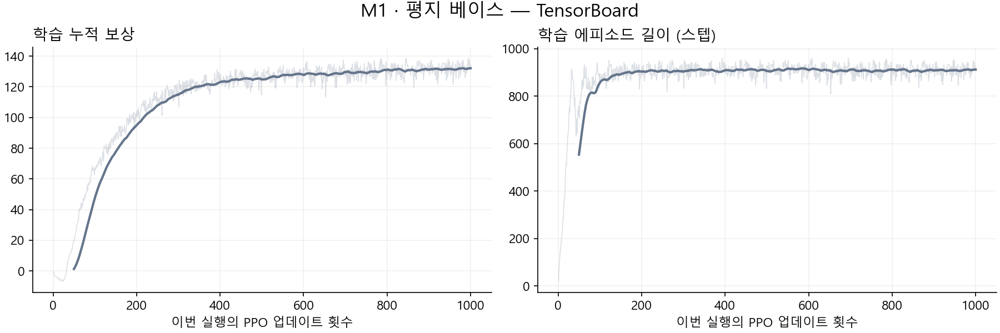
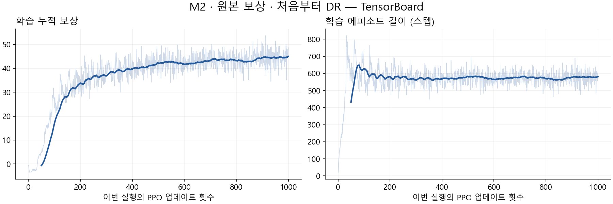
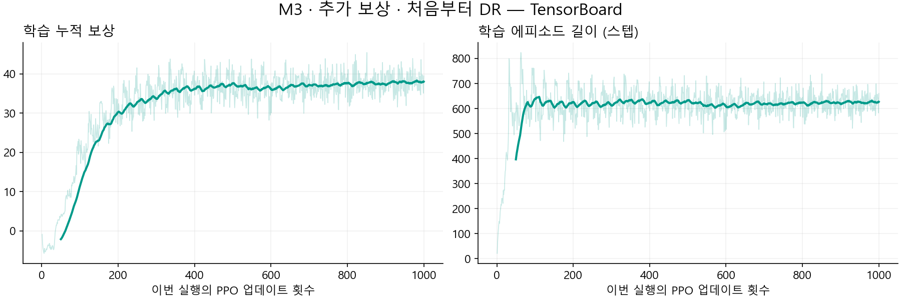
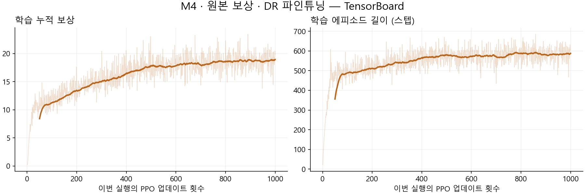
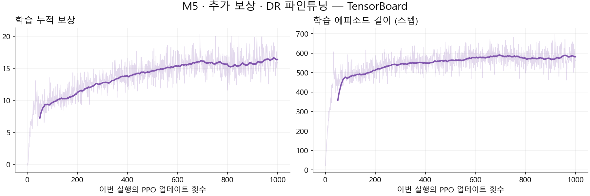
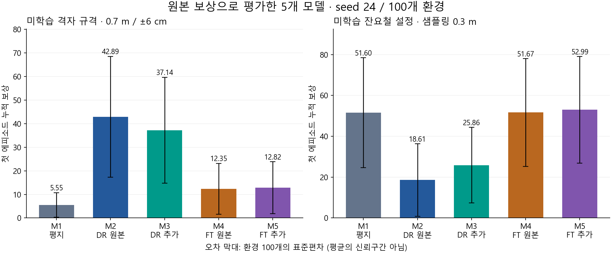

실습 과제 1 — 처음 보는 환경에서도 잘 걷는 Ant 만들기
평지 베이스 · 처음부터 DR 학습 · DR 파인튜닝: 5개 모델의 사각 격자·잔요철 평가
최종 갱신: 2026년 10월 6일 · 평가 기록 ant_eval_grid_rough_video_20261006_045015 기준
외부 공유 보고서
핵심 결과: 미학습 격자 규격에서는 원본 보상으로 처음부터 DR 학습한 M2가 42.8943으로 가장 높았다. 미학습 잔요철 설정에서는 추가 보상으로 파인튜닝한 M5가 52.9879로 가장 높았으나, 평지 베이스 51.6015 대비 차이는 약 2.7%였다. 지형에 따라 학습 방식과 추가 보상의 효과가 달랐다.
1. 연구개요
연구 목적
평지에서 잘 걷는 Ant가 지면의 높이·형태와 마찰이 달라져도 전진할 수 있는지 확인한다. 환경 변화에 대한 강건성을 높이는 방법으로 환경 도메인 랜덤화(DR), 평지 사전학습 후 파인튜닝, 보상함수 설계를 비교한다.
비교 모델은 평지 베이스 1개, 혼합 지형에서 처음부터 학습한 원본/추가 보상 모델 2개, 같은 평지 베이스에서 독립적으로 파인튜닝한 원본/추가 보상 모델 2개로 총 다섯 개다.
로봇의 링크 길이·관절 개수·USD 하드웨어 구조, 관측 차원과 신경망 구조는 변경하지 않았다. 발 들기 높이 보상과 별도의 센서 추가는 이번 실험에 포함하지 않았다.
이번 평가에서 ‘학습하지 않은 환경’의 의미
| 평가 지형 | DR 학습 설정 | 이번 평가 설정 | 일반화 대상 |
|---|---|---|---|
| 사각 격자 | 칸 너비 0.6 m, 높이 ±6 cm, 지형 seed 1701 | 칸 너비 0.7 m, 높이 ±6 cm, 지형 seed 2403 | 새로운 격자 규격·배치 |
| 불규칙 잔요철 | 높이 샘플링 간격 0.4 m, 높이 잡음 설정 ±2.5 cm, 지형 seed 1701 | 샘플링 간격 0.3 m, 높이 잡음 설정 ±2.5 cm, 지형 seed 2405 | 새로운 공간 샘플링 설정·배치 |
사각 격자와 잔요철이라는 종류 자체는 DR 학습에 포함됐다. 이번 평가는 같은 종류 안에서 학습에 사용하지 않은 규격·배치로의 일반화를 측정한다. 완전히 새로운 지형 종류에 대한 검증으로 표현하지 않는다. 평지 베이스 M1은 두 종류 모두 학습하지 않았다.
잔요철은 HfRandomUniformTerrainCfg로 무작위 높이를 샘플링한 뒤 사이를 보간한 불규칙한 지면이다. 주기적인 굴곡을 만드는 HfWaveTerrainCfg의 물결과 다르다. ±2.5 cm는 샘플 높이의 잡음 설정이며, 보간 후 표면의 모든 점에 대한 엄격한 상·하한을 뜻하지 않는다.
이전 격자·물결 평가는 별도 원자료로 보존했다. 본문 표와 그래프·영상은 이번 격자·잔요철 평가만 사용한다. 서로 다른 지형의 원점수를 단순 합산하지 않고 같은 지형 안에서 모델을 비교한다.
2. 연구가설
| 번호 | 모델 | 초기 정책 | 학습 보상 | 총 학습량 |
|---|---|---|---|---|
| M1 | 평지 베이스 | 무작위 초기화 | 원본 7개 | 평지 1,000회 |
| M2 | 원본 보상 · 처음부터 DR | 무작위 초기화 | 원본 7개 | DR 1,000회 |
| M3 | 추가 보상 · 처음부터 DR | 무작위 초기화 | 원본 7개 + 벌점 4개 | DR 1,000회 |
| M4 | 원본 보상 · DR 파인튜닝 | M1 | 원본 7개 | 평지 1,000 + DR 1,000회 |
| M5 | 추가 보상 · DR 파인튜닝 | M1 | 원본 7개 + 벌점 4개 | 평지 1,000 + DR 1,000회 |
- H1 — 환경 다양화: 혼합 지형과 마찰 변화에 노출되면 평지 학습보다 새로운 지형 설정에서 성능이 향상될 것이다. 같은 학습량인 M1/M2와, 추가 적응을 수행한 M1/M4를 구분해 비교한다.
- H2 — 학습 출발점: 평지 정책을 출발점으로 삼는 것과 처음부터 DR 학습하는 것은 서로 다른 일반화 특성을 보일 것이다. M2/M4, M3/M5를 비교하되 총 학습량 차이를 함께 고려한다.
- H3 — 보상 설계: 몸통의 상하·좌우 움직임, 롤·피치 회전과 방향 오차 벌점을 추가하면 새로운 지형 설정에서 성능이 향상될 것이다. 같은 학습 방식 안에서 M2/M3, M4/M5를 비교한다.
M4/M5는 동일한 M1 체크포인트에서 각각 독립적으로 시작했다. M5가 M4의 학습 결과를 이어받은 것은 아니다. M2/M3 및 M4/M5는 각 쌍 안에서 환경·학습 seed·PPO 설정·업데이트 수가 같고 보상 구성이 다르다.
3. Training 및 Rollout
3.1 컴퓨터 사양 및 주요 라이브러리
| 항목 | 사양·버전 |
|---|---|
| 운영체제 | Ubuntu 22.04.5 LTS, x86_64 |
| CPU | Intel Xeon Gold 5512U, 28코어 / 56스레드 |
| 메모리 | OS에서 인식한 총 메모리 약 251 GiB |
| GPU | NVIDIA RTX 6000 Ada Generation, 48 GB급 VRAM (nvidia-smi: 49,140 MiB) |
| NVIDIA 드라이버 | 580.178.04 |
| CUDA Toolkit / PyTorch CUDA 런타임 | 12.8 (nvcc 12.8.61) / 12.8 |
| Python / Conda 환경 | 3.11.16 / lerobot-arena |
| Isaac Sim | 5.1.0.0 |
| Isaac Lab 저장소 | VERSION 기준 2.3.0 |
| Isaac Lab 패키지 | isaaclab 0.47.2, isaaclab_tasks 0.11.6, isaaclab_rl 0.4.4 |
| PyTorch / torchvision | 2.7.0+cu128 / 0.22.0+cu128 |
| RSL-RL / Gymnasium | 3.0.1 / 1.2.0 |
| TensorBoard / NumPy | 2.21.0 / 1.26.0 |
| Hydra / Warp | 1.3.7 / 1.17.0 |
버전은 보고서 작성 시 실제 설치 환경에서 확인했다. nvidia-smi의 CUDA 13.0 표시는 드라이버 지원 상한이며, 사용 중인 Toolkit·PyTorch 런타임은 12.8이다. 과거 평지 학습 시점의 전체 패키지 스냅샷을 별도로 남긴 것은 아니다.
3.2 공통 실험 설정
학습과 도메인 랜덤화
| 설정 | 값 |
|---|---|
| 학습 환경 수 / seed | 4,096 / 42 |
| 각 실행의 학습량 | 1,000 PPO 업데이트 |
| 업데이트당 수집량 | 환경당 32스텝, 총 131,072 transition |
| 각 1,000회 실행의 수집량 | 131,072,000 transition |
| Actor / Critic | 각각 은닉층 400–200–100, ELU |
| 관측 / 행동 | 60차원 / 관절 effort 8차원 |
| PPO | 초기 learning rate 0.0005, adaptive, 5 epochs, 4 minibatches |
| 할인율 / GAE λ / PPO clip | 0.99 / 0.95 / 0.2 |
| 물리 / 제어 주기 | 1/120초 / 1/60초 |
| 최대 에피소드 | 16초 = 960 제어 스텝 |
| 외란 | 없음 |
| DR 학습 지형 | 생성 확률 | 설정 |
|---|---|---|
| 평지 | 10% | MeshPlaneTerrainCfg |
| 불규칙 잔요철 | 30% | 높이 ±2.5 cm, 높이 간격 0.5 cm, 공간 샘플링 0.4 m |
| 사각 격자 | 40% | MeshRandomGridTerrainCfg, 칸 0.6×0.6 m, 높이 −6~+6 cm |
| 경사 | 10% | slope 파라미터 0.02~0.10 |
| 역경사 | 10% | 같은 범위의 반대 경사 |
DR 학습 지형은 seed 1701로 생성한 20×20 m 타일 16×16개, 총 320×320 m다. 비율은 타일 생성 확률이며, 실제 타일 개수나 로봇의 경험 시간 비율을 보장하지 않는다. 지형을 매 스텝 또는 리셋마다 다시 생성하지 않는다. 격자는 holes=False, 중앙 플랫폼 폭 2 m를 사용하며, 인접 칸 단차는 최대 약 12 cm다. slope 값의 단위는 도(degree)가 아니다.
M2~M5의 로봇별 마찰은 정지 마찰 0.5~1.25, 동적 마찰 0.4~1.0에서 배정하고 동적 마찰이 정지 마찰보다 크지 않도록 한다. 64개 후보 중 배정하며 리셋 간 유지한다. 지면 마찰 1.0, 결합 방식 average를 사용한다. M1은 원본 평지 설정으로 학습했다.
보상 설계 — 실제 학습 YAML 기준
| 원본 보상 항목 | 가중치 | 역할 |
|---|---|---|
| progress | +1.0 | 목표까지의 거리 감소 |
| alive | +0.5 | 종료되지 않은 상태 유지 |
| upright | +0.1 | 몸통 수직 정렬, 투영값 기준 0.93 |
| move_to_target | +0.5 | 몸통 정면과 목표 방향 정렬, 투영값 기준 0.8 |
| action_l2 | −0.005 | 큰 행동 명령 억제 |
| energy | −0.05 | 행동·관절 속도 기반 에너지 사용 대용 지표 |
| joint_pos_limits | −0.1 | 관절 한계 근처 사용 억제 |
M3/M5의 추가 벌점은 다음과 같다. 이번 결과는 수직 속도 −0.05, 방향 오차 −0.1로 완화한 모델이다. 이전 −0.5/−1.0 모델의 결과와 혼합하지 않는다.
| 추가 항목 | 식·가중치 | 의도 |
|---|---|---|
| 수직 속도 | −0.05 × v_z_world² |
몸통의 과도한 상하 움직임 억제 |
| 롤·피치 각속도 | −0.05 × (ω_x_body² + ω_y_body²) |
몸통 회전 흔들림 억제 |
| 좌우 속도 | −0.05 × v_y_body² |
몸통 좌우 움직임 억제 |
| 방향 오차 | −0.1 × (1 − cos(목표 방위각 − 몸통 yaw)) |
목표 방향 정렬 유도 |
RewardManager는 각 항목의 가중치와 제어 시간 간격을 곱한다. 원본에도 방향 보상이 있으므로 보행 모양을 ‘방향 보상이 없어서’라고 설명하지 않는다. 벌점 추가가 특정 발 궤적이나 보행 형태를 보장하는 것은 아니다.
평가·영상 조건
- 공식
scripts/reinforcement_learning/rsl_rl/play_one_episode.py를 사용했으며, 모든 모델에 원본 7개 보상만 적용했다. - 공통 CLI:
--seed 24 --num_envs 100, 외란 없음, 기본 로봇 배치 간격 5 m. 평가 마찰 랜덤화 범위는 위 DR 설정과 같다. - 격자:
Isaac-Ant-DR-Eval-Blocks-v0, 지형 seed 2403, 칸 너비 0.7 m, 높이 ±6 cm, 격자 100%. - 잔요철:
Isaac-Ant-DR-v0에서 평지·경사·역경사 비율을 0, 잔요철 비율을 1로 지정했다. 지형 seed 2405,noise_range=(-0.025, 0.025),noise_step=0.005,downsampled_scale=0.3, 잔요철 100%다. - CLI seed 24와 지형 생성 설정의 seed는 별개다. 지형별로 다섯 모델에 같은 설정을 적용했다.
- 각 로봇의 첫 에피소드만 종료 스텝까지 포함했다. mean/std는 100개 누적 보상의 평균/모집단 표준편차다. std는 평균의 신뢰구간이 아니다.
- 10개 평가 모두 실제 환경 수 100개,
Completed first episodes: 100/100, 원본 보상 7개를 로그에서 확인했다. 이는 통계 수집 완료이며 성공률 100%를 뜻하지 않는다.
원본 평가 폴더는 logs/ant_eval_grid_rough_video_20261006_045015다. 사용자가 실행한 로그를 직접 집계했으며 보고서 작성을 위해 재평가하지 않았다. 평가에 사용한 모델 사본 해시가 각 학습 체크포인트와 일치한다. 격자의 설정은 이전 평가와 같고, 다섯 모델의 보상·스텝 mean/std가 로그의 소수점 6자리까지 동일하게 재현됐다.
영상 10개는 모두 1280×720, 60fps, 960프레임(16초)이다. 카메라는 0번 로봇을 따라간다. 그 로봇이 일찍 종료되면 자동 리셋 이후 장면도 포함되므로, 영상 길이는 생존 시간이 아니다. 한 로봇의 영상이 환경 100개를 대표하지 않는다.
TensorBoard 그래프는 실제 학습 이벤트 파일에서 추출했다. 얇은 선은 원 로그, 굵은 선은 50회 이동평균이고, 표는 평활화 전 처음/마지막 100회 평균이다. 가로축은 해당 실행의 업데이트 1~1,000회이며 파인튜닝 이전의 평지 학습을 포함하지 않는다. 학습 지형과 보상 정의가 다른 모델의 학습 누적 보상을 성능 순위로 직접 비교하지 않는다.
3.3 M1 — 평지 베이스
체크포인트: logs/rsl_rl/ant/2026-09-17_13-21-32_ant_baseline/model_999.pt

| 학습 지표 | 처음 100회 평균 | 마지막 100회 평균 |
|---|---|---|
| 학습 누적 보상 | 24.3946 | 131.8703 |
| 에피소드 길이 (스텝) | 704.9865 | 910.8404 |
| 진행 보상 성분 (에피소드 누적 / 16초) | 1.6220 | 8.3838 |
| 평가 지형 | 보상 평균 ± 표준편차 | 에피소드 길이 평균 ± 표준편차 (스텝) |
|---|---|---|
| 사각 격자 | 5.546510 ± 5.197220 | 439.32 ± 357.87 |
| 잔요철 | 51.601512 ± 26.924326 | 733.25 ± 325.76 |
격자 평균 보상은 5.5465로 가장 낮았다. 잔요철은 51.6015로, 잔요철을 직접 학습하지 않았음에도 M2/M3보다 높고 M4와 비슷했다. 평지에서 얻은 정책의 일반화 성능이 지형 설정에 따라 달랐다.
3.4 M2 — 원본 보상 · 처음부터 DR
체크포인트: logs/rsl_rl/ant/2026-10-06_02-01-31_scratch_rough_blocks_original/model_999.pt

| 학습 지표 | 처음 100회 평균 | 마지막 100회 평균 |
|---|---|---|
| 학습 누적 보상 | 8.1401 | 44.6866 |
| 에피소드 길이 (스텝) | 528.9255 | 579.7731 |
| 진행 보상 성분 (에피소드 누적 / 16초) | 0.4504 | 2.7769 |
| 평가 지형 | 보상 평균 ± 표준편차 | 에피소드 길이 평균 ± 표준편차 (스텝) |
|---|---|---|
| 사각 격자 | 42.894314 ± 25.629163 | 685.78 ± 358.47 |
| 잔요철 | 18.609978 ± 17.772745 | 362.89 ± 271.63 |
격자 평균 보상은 42.8943으로 가장 높았고 M1의 약 7.73배였다. 잔요철은 18.6100으로 가장 낮아 M1보다 약 63.9% 낮았다. 학습에 잔요철도 포함됐지만 그 사실만으로 새 잔요철 설정에서 높은 성능이 보장되지는 않았다.
3.5 M3 — 추가 보상 · 처음부터 DR
체크포인트: logs/rsl_rl/ant/2026-10-06_02-21-55_scratch_rough_blocks_light/model_999.pt

| 학습 지표 | 처음 100회 평균 | 마지막 100회 평균 |
|---|---|---|
| 학습 누적 보상 | 4.6769 | 38.0231 |
| 에피소드 길이 (스텝) | 517.7339 | 626.4574 |
| 진행 보상 성분 (에피소드 누적 / 16초) | 0.2924 | 2.4069 |
| 평가 지형 | 보상 평균 ± 표준편차 | 에피소드 길이 평균 ± 표준편차 (스텝) |
|---|---|---|
| 사각 격자 | 37.144177 ± 22.444523 | 712.65 ± 365.67 |
| 잔요철 | 25.857550 ± 18.519332 | 534.25 ± 329.79 |
M2 대비 격자 보상은 13.4% 낮고 잔요철은 38.9% 높았다. 잔요철 평균 에피소드 길이는 362.89→534.25스텝으로 늘었다. 다만 잔요철 보상 25.8576은 평지 베이스보다 낮았고, 추가 보상의 이점이 두 지형에 일관되게 나타난 것은 아니다.
3.6 M4 — 원본 보상 · DR 파인튜닝
체크포인트: logs/rsl_rl/ant/2026-10-05_21-47-43_baseline_ft_rough_blocks_original/model_1998.pt

| 학습 지표 | 처음 100회 평균 | 마지막 100회 평균 |
|---|---|---|
| 학습 누적 보상 | 9.8183 | 18.7296 |
| 에피소드 길이 (스텝) | 421.9205 | 584.8142 |
| 진행 보상 성분 (에피소드 누적 / 16초) | 0.6422 | 1.1890 |
| 평가 지형 | 보상 평균 ± 표준편차 | 에피소드 길이 평균 ± 표준편차 (스텝) |
|---|---|---|
| 사각 격자 | 12.351667 ± 10.774248 | 619.52 ± 385.79 |
| 잔요철 | 51.667219 ± 26.397485 | 725.68 ± 317.62 |
격자 평균 보상은 M1의 약 2.23배로 개선됐다. 잔요철은 51.6672로 M1의 51.6015와 거의 같았다(+0.13%). 이번 조건에서 파인튜닝은 평지 기반 정책의 잔요철 성능을 대체로 유지하면서 격자 성능을 개선했다.
3.7 M5 — 추가 보상 · DR 파인튜닝
체크포인트: logs/rsl_rl/ant/2026-10-05_23-50-19_baseline_ft_rough_blocks_light/model_1998.pt

| 학습 지표 | 처음 100회 평균 | 마지막 100회 평균 |
|---|---|---|
| 학습 누적 보상 | 8.4674 | 16.3515 |
| 에피소드 길이 (스텝) | 419.2527 | 583.3942 |
| 진행 보상 성분 (에피소드 누적 / 16초) | 0.6437 | 1.1886 |
| 평가 지형 | 보상 평균 ± 표준편차 | 에피소드 길이 평균 ± 표준편차 (스텝) |
|---|---|---|
| 사각 격자 | 12.816671 ± 11.009050 | 573.42 ± 386.33 |
| 잔요철 | 52.987868 ± 26.101945 | 751.68 ± 309.33 |
격자 12.8167, 잔요철 52.9879로 M4보다 각각 3.8%, 2.6% 높았다. 잔요철 평균은 가장 높지만 M1 대비 향상은 약 2.7%다. 단일 학습·평가 seed 결과이므로 작은 평균 차이를 확정적 우위로 해석하지 않는다.
3.8 결과 종합 및 가설 검토
| 모델 | 격자 보상 평균 ± 표준편차 | 잔요철 보상 평균 ± 표준편차 | 격자 평균 지속 시간 | 잔요철 평균 지속 시간 |
|---|---|---|---|---|
| M1 · 평지 베이스 | 5.5465 ± 5.1972 | 51.6015 ± 26.9243 | 7.32초 | 12.22초 |
| M2 · 원본 보상 · 처음부터 DR | 42.8943 ± 25.6292 | 18.6100 ± 17.7727 | 11.43초 | 6.05초 |
| M3 · 추가 보상 · 처음부터 DR | 37.1442 ± 22.4445 | 25.8575 ± 18.5193 | 11.88초 | 8.90초 |
| M4 · 원본 보상 · DR 파인튜닝 | 12.3517 ± 10.7742 | 51.6672 ± 26.3975 | 10.33초 | 12.09초 |
| M5 · 추가 보상 · DR 파인튜닝 | 12.8167 ± 11.0091 | 52.9879 ± 26.1019 | 9.56초 | 12.53초 |

지속 시간은 평균 스텝 수 × 1/60초다. 정지해 있는 시간도 포함되므로 계속 전진한 시간으로 해석하지 않는다.
| 비교 | 격자 평균 보상 변화 | 잔요철 평균 보상 변화 |
|---|---|---|
| M1 → M2: 같은 1,000회, 평지 → DR | +673.36% | -63.94% |
| M1 → M4: 원본 보상 파인튜닝 추가 | +122.69% | +0.13% |
| M2 → M3: 처음부터 DR에서 추가 보상 | -13.41% | +38.94% |
| M4 → M5: 파인튜닝에서 추가 보상 | +3.76% | +2.56% |
- H1은 격자에서 지지됐지만 잔요철에서는 지지되지 않았다. 같은 학습량의 M1/M2에서 격자는 크게 개선되고 잔요철은 낮아졌다. 혼합 지형 노출이 모든 평가 설정의 성능 향상으로 이어지지는 않았다.
- H2에서는 지형별 순위 차이가 관찰됐다. 격자는 처음부터 DR 학습한 M2/M3가, 잔요철은 평지 기반 M4/M5가 높았다. 평지에서 얻은 보행 특성의 영향이라는 해석은 가능하지만 총 학습량과 정책·접촉 동작을 통제한 인과 분석은 아니다.
- H3의 효과는 조건에 따라 달랐다. 추가 보상은 처음부터 DR 학습했을 때 격자 보상을 낮추고 잔요철 보상을 높였다. 파인튜닝에서는 두 지형 평균이 소폭 높았지만 확정적 개선 판단에는 반복 실험이 필요하다. 이번 로그만으로 몸통 안정성 개선이나 정지 문제 해결을 입증하지 않는다.
3.9 학습·평가 재현 명령어
아래 명령은 lerobot-arena 환경과 저장소 루트에서 실행한다. 보고서의 실제 실행 경로와 체크포인트는 각 모델 절에 명시했다.
conda activate lerobot-arena
cd /home/oms/robotics_simulation/IsaacLab_RS
M1 — 평지 베이스 학습
./isaaclab.sh -p scripts/reinforcement_learning/rsl_rl/train.py \
--task Isaac-Ant-v0 \
--num_envs 4096 --seed 42 --max_iterations 1000 \
--run_name ant_baseline --headless
M2/M3 — 처음부터 DR 학습, 순차 실행
./isaaclab.sh -p scripts/reinforcement_learning/rsl_rl/train.py \
--task Isaac-Ant-Baseline-FT-v0 \
--num_envs 4096 --seed 42 --max_iterations 1000 \
--run_name scratch_rough_blocks_original --headless && \
./isaaclab.sh -p scripts/reinforcement_learning/rsl_rl/train.py \
--task Isaac-Ant-Baseline-FT-Light-v0 \
--num_envs 4096 --seed 42 --max_iterations 1000 \
--run_name scratch_rough_blocks_light --headless
태스크 이름에 FT가 있지만 --resume이 없으면 무작위 초기화에서 시작한다. 서로의 최종 모델을 이어받지 않는다.
M4/M5 — 같은 평지 베이스에서 각각 파인튜닝
./isaaclab.sh -p scripts/reinforcement_learning/rsl_rl/train.py \
--task Isaac-Ant-Baseline-FT-v0 \
--num_envs 4096 --seed 42 --max_iterations 1000 \
--resume --load_run '2026-09-17_13-21-32_ant_baseline$' \
--checkpoint 'model_999\.pt$' \
--run_name baseline_ft_rough_blocks_original --headless && \
./isaaclab.sh -p scripts/reinforcement_learning/rsl_rl/train.py \
--task Isaac-Ant-Baseline-FT-Light-v0 \
--num_envs 4096 --seed 42 --max_iterations 1000 \
--resume --load_run '2026-09-17_13-21-32_ant_baseline$' \
--checkpoint 'model_999\.pt$' \
--run_name baseline_ft_rough_blocks_light --headless
이 명령은 보고서에 사용한 기존 평지 체크포인트를 선택한다. 평지부터 다시 학습해 재현할 경우 새 평지 실행 폴더명으로 --load_run을 바꿔야 한다. --max_iterations 1000은 파인튜닝에서는 추가 업데이트 1,000회다. iteration 999부터 이어져 최종 파일명은 model_1998.pt다. 정책·가치망과 optimizer 상태를 함께 불러온다.
다섯 모델 × 두 지형 평가 및 영상 저장
다음은 이번 격자·잔요철 평가에 사용한 조건을 재현하는 명령이다. 평가 스크립트 자체는 변경하지 않고 실행 인자로 지형만 지정한다. 원본 보상 7개를 사용하는 Isaac-Ant-DR-v0에서 잔요철 비율을 1로 설정한다.
#!/usr/bin/env bash
set -euo pipefail
cd /home/oms/robotics_simulation/IsaacLab_RS
eval_dir="$PWD/logs/ant_eval_grid_rough_video_$(date +%Y%m%d_%H%M%S)"
mkdir -p "$eval_dir"
names=(01_baseline 02_dr_original 03_dr_light 04_finetune_original 05_finetune_light)
checkpoints=(
"logs/rsl_rl/ant/2026-09-17_13-21-32_ant_baseline/model_999.pt"
"logs/rsl_rl/ant/2026-10-06_02-01-31_scratch_rough_blocks_original/model_999.pt"
"logs/rsl_rl/ant/2026-10-06_02-21-55_scratch_rough_blocks_light/model_999.pt"
"logs/rsl_rl/ant/2026-10-05_21-47-43_baseline_ft_rough_blocks_original/model_1998.pt"
"logs/rsl_rl/ant/2026-10-05_23-50-19_baseline_ft_rough_blocks_light/model_1998.pt"
)
for i in "${!checkpoints[@]}"; do
for terrain in grid rough; do
run_dir="$eval_dir/${names[$i]}/$terrain"
mkdir -p "$run_dir"
cp "${checkpoints[$i]}" "$run_dir/model.pt"
if [[ "$terrain" == grid ]]; then
terrain_args=(
--task Isaac-Ant-DR-Eval-Blocks-v0
env.scene.terrain.terrain_generator.seed=2403
env.scene.terrain.terrain_generator.sub_terrains.blocks.grid_width=0.7
'env.scene.terrain.terrain_generator.sub_terrains.blocks.grid_height_range=[0.06,0.06]'
)
else
terrain_args=(
--task Isaac-Ant-DR-v0
env.scene.terrain.terrain_generator.seed=2405
env.scene.terrain.terrain_generator.sub_terrains.flat.proportion=0.0
env.scene.terrain.terrain_generator.sub_terrains.slope.proportion=0.0
env.scene.terrain.terrain_generator.sub_terrains.inverted_slope.proportion=0.0
env.scene.terrain.terrain_generator.sub_terrains.rough.proportion=1.0
'env.scene.terrain.terrain_generator.sub_terrains.rough.noise_range=[-0.025,0.025]'
env.scene.terrain.terrain_generator.sub_terrains.rough.noise_step=0.005
env.scene.terrain.terrain_generator.sub_terrains.rough.downsampled_scale=0.3
)
fi
echo "평가 및 녹화: ${names[$i]} / ${terrain}"
./isaaclab.sh -p scripts/reinforcement_learning/rsl_rl/play_one_episode.py \
--seed 24 --num_envs 100 \
--checkpoint "$run_dir/model.pt" \
--video --video_length 960 --headless \
"${terrain_args[@]}" \
2>&1 | tee "$run_dir/evaluation.log"
done
done
echo "평가·영상 저장 위치: $eval_dir"
rg '\[RESULT\]' "$eval_dir" -g evaluation.log
각 실행은 새 시간 이름의 logs/ant_eval_grid_rough_video_... 폴더에 저장된다. 체크포인트 사본을 모델·지형별 폴더에 두므로 기존 학습 영상은 덮어쓰지 않는다. grid/evaluation.log, rough/evaluation.log에 통계가 기록되고 영상은 각각 videos/play/rl-video-step-0.mp4에 저장된다.
영상은 최대 960스텝이며 모든 환경이 조기 종료되면 짧아질 수 있다. 이번 평가에서는 모두 16초 영상을 얻었다.
python -m tensorboard.main --logdir logs/rsl_rl/ant --port 6006
3.10 해석의 한계
- 학습량: M1~M3은 총 1,000회, M4/M5는 총 2,000회다. 처음부터 DR 2,000회와 평지 2,000회 대조군이 없어 파인튜닝 방식만의 인과 효과를 분리하지 못한다.
- 반복 수: 학습 seed 42, 평가 seed 24 한 쌍이다. 환경 100개는 독립적으로 학습한 정책 100개가 아니며 표준편차는 환경 간 변동성이다. 학습 seed 간 변동성이나 평균의 신뢰구간이 아니다.
- 보상 묶음: 네 벌점을 함께 적용해 개별 항목의 효과를 분리하지 못한다. 발 들기 높이나 특정 보행 형태를 직접 보상한 실험도 아니다.
- 종료 원인·정지: 공식 로그는 보상과 에피소드 길이의 mean/std를 제공한다. 이번 평가의 성공률·넘어짐 수·정지 비율·이동거리·몸통 안정성 지표는 따로 측정하지 않았다. 이전 진단 수치를 이번 결과에 재사용하지 않는다.
- 초기 접촉·유한 지형: 기존 초기화에 따른 시작 직후 튐의 영향이 남아 있을 수 있다. 평가 지형은 160×160 m이며 경계 이탈과 넘어짐의 영향을 현재 요약 로그만으로 구분할 수 없다.
- 평가 범위: 두 지형 종류 모두 DR 학습에 포함됐고 이번에는 규격·배치만 달라졌다. 새로운 지형 종류 전체에 대한 강건성을 검증한 결과로 확대 해석하지 않는다.
4. 결론
원본 보상으로 처음부터 DR 학습한 M2는 새 격자 규격에서 42.8943으로 가장 높은 평균 보상을 얻었다. 그러나 새 잔요철 설정에서는 18.6100으로 평지 베이스 51.6015보다 낮았다. 학습에 두 지형 종류가 모두 포함되어 있어도, 변경된 설정에서의 성능은 지형에 따라 달랐다.
평지 베이스에서 파인튜닝한 M4/M5는 격자 보상을 5.5465 → 12.3517/12.8167로 높였다. 잔요철은 51.6672/52.9879로 평지 베이스와 비슷하거나 평균상 소폭 높았다. 총 학습량 차이가 있는 비교이지만, 이번 조건에서 평지 기반 파인튜닝은 잔요철 성능을 대체로 유지하면서 격자 적응을 개선했다.
추가 보상은 처음부터 DR 학습했을 때 격자 보상을 13.4% 낮추고, 잔요철 보상을 38.9% 높였다. 파인튜닝에서는 격자 3.8%, 잔요철 2.6%의 평균 증가를 보였다. 보상 설계의 효과는 지형과 학습 방식에 따라 달랐으며, 모든 조건에서 일관된 개선은 확인되지 않았다.
이번 결과는 학습 지형의 이름만으로 강건성을 판단하기 어렵고, 같은 종류라도 규격과 공간 샘플링이 달라진 조건에서 검증해야 함을 보여준다. 후속 연구에는 동일 총 학습량 비교, 여러 학습 seed, 보상 항목별 제거 실험과 종료 원인·정지·접촉 동작의 정량 측정이 필요하다.
결과 파일과 제출 자료
- 이번 평가 수치 원자료: 공식 로그의 소수점 6자리 결과와 원본 경로.
- TensorBoard 요약, 학습 설정, 체크포인트·로그·영상 해시.
- 그래프·영상·실험 원자료: 다섯 모델의 학습 그래프와 격자·잔요철 영상 10개.
- 평가 명령: evaluate_grid_rough.sh.
- 이전 격자·물결 보고서는 로컬
reports/assignment1/archive/ASSIGNMENT1_grid_waves_20261006.md와assets_unseen에 보존했다. 원본 평가 폴더도 유지했다. - 외부 링크는 보고서 공유용이다. 조별 GitHub 링크와 5분 발표 PPT는 별도 제출 항목이다.